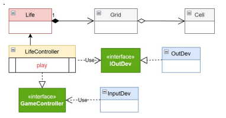

By Alexander Kreuzer
Email: Alexander.kreuzer@studio.unibo.it
GIT repo: https://github.com/Alexing-uni/ISS26_Alexander_Kreuzer
Email: Alexander.kreuzer@studio.unibo.it
GIT repo: https://github.com/Alexing-uni/ISS26_Alexander_Kreuzer
R1 Realizzare una versione in Java del gioco Life di Conway, come gioco zero-player.
Il gioco consiste nell’introdurre una Griglia di Celle il cui stato (cella ‘viva’ o cella ‘morta’)
evolve come stabilito dallle regole di ConwayLife
R2 L’utente umano deve poter:
- specificare la configurazione iniziale della griglia del gioco
- vedere l’evoluzione del gioco in forma opportuna
(si veda Problema della vista del gioco )
- fermare e far ripartire l’evoluzione del gioco
- pulire (a gioco fermo) la configurazione della griglia del gioco
L'introduzione di una GUI richiede il passaggio da un sistema di calcolo batch (Sprint 1) a un sistema Event-Driven e reattivo. I nuovi componenti da modellare sono:
javax.swing. Deve essere in grado di mappare visivamente lo stato della matrice (IGrid) e di fornire i controlli utente richiesti (bottoni Start, Stop, Clear).
ActionEvent) e orchestrare la comunicazione con il Core di Business (Life).
L'architettura del sistema deve continuare a rispettare i dettami della Clean Architecture: il dominio (Model) non deve avere alcuna dipendenza dalle librerie grafiche (Swing). Utilizzeremo pertanto il pattern MVC (Model-View-Controller) accoppiato al pattern Observer.
Il problema architetturale più critico riguarda il Threading (EDT - Event Dispatch Thread):
nextGeneration()) venisse eseguito sull'EDT, l'intera interfaccia andrebbe in "freeze" (si bloccherebbe), impedendo all'utente di premere il tasto "Stop".
Soluzione adottata: Deleghiamo il loop di calcolo delle generazioni a un Thread/Worker separato. Quando questo thread deve notificare un cambiamento di stato alla GUI, la richiesta viene accodata in modo sicuro sull'EDT tramite il metodo SwingUtilities.invokeLater().

Figura 1: Interfaccia grafica Java Swing che soddisfa i requisiti visivi e di interazione (R2).
Il testing automatico delle interfacce grafiche (GUI Testing) risulta spesso fragile. La strategia di collaudo adottata è ibrida:
testOscilla) tramite JUnit, per garantire che l'integrazione del nuovo Controller non abbia alterato la logica matematica di base.Il progetto estende l'architettura dello Sprint 1 aggiungendo nuovi package secondo il principio della Separation of Concerns:
conway.domain: Rimane assolutamente invariato. Questo dimostra il successo della progettazione orientata alle interfacce fatta nello Sprint 1.conway.gui: Contiene le classi Swing (es. ConwayGui, ControlPanel).conway.controller: Contiene il LifeController aggiornato per agire da Adapter asincrono tra View e Model.
L'analisi della Code Coverage con JaCoCo conferma la totale copertura (100% dei branch logici) del package di dominio conway.domain. Il package conway.gui viene escluso dai test unitari come previsto dal Test Plan.
Il deployment avviene tramite la generazione di un "Fat JAR" eseguibile, che incapsula sia la logica che le librerie grafiche, rendendo l'applicazione un eseguibile Desktop standalone.
Task: gradlew jar
Esecuzione: java -jar build/libs/conway26JavaSwing-1.0.jar
Sebbene il requisito R2 sia stato pienamente soddisfatto, il sistema soffre dei tipici limiti di un Monolite Desktop. L'applicazione è strettamente accoppiata alla JVM locale su cui viene eseguita, precludendo l'accessibilità da remoto o via rete. Questo collo di bottiglia architetturale costituirà la spinta propulsiva per la transizione verso i Sistemi Distribuiti a Microservizi e Web GUI (Sprint 3).